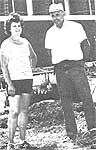
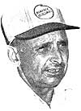

The subjects of MOTHER NO. 84's Plowboy Interview-Ralph and Rita Engelken-are now fighting to save their 500-acre organic farm!
On October 26, 1983, more than 500 farmers, ranchers, and other concerned citizens gathered in St. Joseph, Missouri for the annual conference sponsored by Acres, U.S.A., a monthly 40-page tabloid serving the ecological farming movement. [EDITOR'S NOTE: An interview with its publisher and founder will run in a future issue of MOTHER.]
Certainly the participants had a variety of issues to discuss. Still reeling from one of the worst midwestern droughts in recent history, they faced the ramifications of the Reagan administration's economic policies, as well as chilling forecasts for American family farmers. In 1971, for example, there were 2.4 million family farms in the United States; now, there are 1.5 million. And-according to keynote speaker Chuck Perry of the Farmers and Ranchers Protective League-by 1985 the number will decline to 600,000 or less, if the government has its way.
Perry stated, ' "We know from internal Farmers Home Administration (FHA) documents, which were uncovered in the process of the Curry B. Block lawsuit in Georgia, that there is in fact a hidden agenda within the Department of Agriculture to reduce the number of family farms and ranches in America . . . to anywhere from 500,000 to 600,000 by 1985."
And what is the supposed reasoning behind such a move? "Well, last year American agriculture, in the aggregate, took in 50Q for every dollar it paid out . . . I guess it looks obvious to the bankers in New York that the way to solve that problem is to get rid of half of the farmers, thus guaranteeing a dollar for a dollar."
Currently some 250,000 farmers and ranchers are involved in foreclosure and liquidation proceedings. The Comptroller of the U.S. reports that, between 1950 and 1979, America lost an average of 2,000 farms a week. At that rate it won't be long before 80% of America's farmers are squeezed out of their livelihood. Such a reduction, Chuck Perry asserts, would represent the largest centralization of economic power in the history of America-in his terms, the "Sovietization of American agriculture".
Perry does have reason to know whereof he speaks. The outspoken rancher lost his farm in the Dakotas to foreclosure while he was actually ahead on his payments. It took Chuck two years in federal district court to even obtain access to his own farm's financial records. He finally won the right to review the 850 pages of files, which indeed did show he had been ahead on his payments at the time he was foreclosed. During that process, he learned that [1] "voluntary liquidation is almost never voluntary", and that [2J there are steps farmers can take to retaliate. He formed the Farmers and Ranchers Protective League to educate agriculturists about their legal rights, and to help change public policy on forced liquidations. "Usually the borrower is given an option: He is told to voluntarily liquidate or else the bank will file a criminal action for the sale of governmentally-secured property. Frankly, it's not much of an option."
Many believe the solution lies in achieving a parity price for the growers. Since 1952 the bottom line that farmers and ranchers get for their product has declined. As Perry said in the conclusion of his speech, "If we don't treat that problem, we're not going to have enough family farms left to have a base on which to operate our overall economy in an independent way and maintain our freedom."
A CASE CLOSE TO OUR HEARTS
Those of you who remember the Plowboy Interview with Ralph and Rita Engelken in MOTHER NO. 84 will be saddened to learn that they are currently waist-deep in litigation in a last-ditch effort to save their 500-acre family farm.
The Engelkens firmly believe that the foreclosure stems from their outspoken opposition to chemical farming . . . and the fact that they are becoming more and more visible in the organic farming movement.
However, the banks involved in the proceedings maintain that it is an ordinary foreclosure based on figures and forecasts indicating that the Engelkens are, in fact, a poor credit risk.
Yet another involved party believes there could be a conspiracy against the Engelkens, but that it has nothing to do with their organic inclinations.
It's impossible to state precisely who is right and who is wrong. There is convincing evidence on all sides. Therefore, I've simply tried to compile the available facts and opinions to inform interested and concerned readers about the issues at stake in what is undeniably an emotionally-charged situation.
HOW IT ALL BEGAN
The Farm Credit System-as many of you know-is a national network of financial organizations whose purpose is to provide the financing necessary for farmers to produce their crops year by year. Both the Federal Land Bank and the Production Credit Association (PCA) are part of the Farm Credit System. The Land Bank provides long-term real estate financing, while the PCA deals in shortterm operating loans and intermediateterm capital.
Up until five years ago, the Engelkens received financial assistance from both these organizations. During the late 70's, however, they suffered severe financial losses: Three bulls died overnight, and nearly half of their cattle were killed when chemicals from a neighboring farm were washed into the stock's water supply.
At that time, a PCA officer suggested that Ralph and Rita reamortize their loan with an institution granting long-term loans, because their shaky financial situation prevented them from repaying short-term operating loans from the PCA.
So Ralph and Rita went to the Federal Land Bank branch in Manchester, Iowa. Already carrying a long-term mortgage on Ralph's land, the bank agreed to an additional "workout" loan. (The term work-out is usually applied to loans designed to see the borrower through a temporary monetary crisis.) The financing was set up with a variable-rate interest, a "balloon payment" structure, and a five-year repayment schedule.
Ralph and Rita, perhaps not comprehending all the aspects of the agreement, signed on the dotted line . . . confident that, if necessary, they could renegotiate the terms at the end of the five-year period.
But this was not to be the case.
"We never would have signed the five-year loan agreement if we had known it wasn't going to be renegotiable," Rita said.
But according to David Dudley, spokesperson for the Manchester Land Bank, it was clearly stated in the loan that the full value would be due at the end of the five-year period. In addition, Mr. Dudley emphasized that the Engelkens were given plenty of warning that their loan would not be renewed. Each year, Dudley said, the profit and loss statements were re-evaluated, and beginning three years ago, annual letters were sent to the Engelkens notifying them that they probably weren't going to make it.
Rita responds to that charge by stating the "bottom lines" that the bank had been looking at during those years were the federal tax returns prepared by H&R Block for the Engelkens. Those were years when the Engelkens showed their cattle losses. Thus the tax forms were not, she says, a true reflection of the farm's ability to turn a profit.
TO MAKE MATTERS WORSE
In the meantime, Ralph and Rita had also obtained some short-term loans from Fidelity Bank and Trust for improvements on their farm. During the spring of 1983, supposedly with no previous warning, the Fidelity Bank called in their notes and demanded immediate payment.
Ralph and Rita believe this was done in order to bind them financially to the point that they wouldn't be able to make their interest payment to the Land Bank. They immediately took Fidelity to court. Then, in April of '83, the Land Bank began foreclosure proceedings.
SMELLING A RAT (RITA'S TALE)
"Most other farmers have repayment schedules of between 15 and 30 years. Why were we granted only 5? I think they're trying to choke us out. They are cutting of our cash flow to force us out of the organic farming business. There was a lot of personal animosity between Ralph and a former officer of the Manchester Land Bank. The man's no longer with the organization, but he was there when the loan was made. I think he never intended to allow us the right to renegotiate."
The Engelkens maintain that they were not, in fact, behind on payments at the time the Land Bank sent notification that the loan would not be renewed, and that the farm would be subject to foreclosure.
Last fall Ralph explained his plight to an audience at the Acres, US.A. convention in St. Joseph, Missouri. There he became acquainted with a fellow organic farmer who was willing to pay off the Engelkens' obligations. After two weeks of negotiations with Fidelity Bank and Trust, however, the bank declined the offer . . . even as the man was, we're told, actually en route to Iowa with a letter of credit in hand.
According to Rita, still another family friend contacted Fidelity to inquire if he could help meet the payments, only to be told by a bank official, "We aren't interested in the money. We are interested in the Engelkens."
THE BANK RESPONDS
A spokesperson for Fidelity Bank and Trust stated that, on advice of counsel, he could not comment on the situation, since the bank is involved in litigation with the Engelkins. However, national and regional officers of the Land Bank were cooperative and responsive to my inquiries.
Dan Arbach, Vice President of Management Services at the Federal Land Bank in Omaha, was adamant in his claim that the Engelkens' method of farming had nothing to do with his bank's decision to foreclose.
"We look only at whether borrowers have a viable plan for repaying the loan. By viable, I mean that they would need to provide us with income and expense projections that demonstrate they'd be able to repay the loan."
(Ralph did prepare their income and expense projections when he applied for his work-out loan, and in repeated meetings during the course of repayment. Unfortunately, because of the variable interest rate, they paid $145,000 more in interest than was allocated on the cash-flow sheet. Had that extra money been paid to principal instead of interest_ there might not have been a need to renegotiate.)
"Foreclosure is always a last resort," Mr. Arbach continued. "It is only used in situations where the borrower has not been able to regularly make payments over an extended period of time. Most clients are three, four, or even five years behind in payments before foreclosure becomes the general rule."
(Rita stands by her statement that they were not delinquent prior to April 1, 1983, when they were unable to meet a $44,000 payment.)
According to Mr. Arbach, the Federal Land Bank system is currently involved in 77,000 loans to farmers and ranchers. As of December 31, 1983, fewer than 200 of those loans were in foreclosure.
In response to the Engelkens' allegation that they were discriminated against by being granted only a five-year, nonrenewable loan, Mr. Arbach said, "It's true that the vast majority of loans are for a payback period ranging from 20 to 35 years. However, this was a special situation. In the 70's, a group of borrowers-primarily cattle operators and feeders-experienced difficulty due to falling prices, disease, and so on. Rather than calling in their notes, it was decided to extend certain loans for five years to give the borrowers an opportunity to bail themselves out. Not many of these work-out loans were granted, and most all of them are coming due now. Some turned the corner and are making it; others are not."
HISTORICAL NOTES
The Land Bank was federally chartered in the early 1900's by the U.S. government, which provided the initial money to begin making loans. Today, however, the Land Bank is a cooperative owned by stockholders. No funds for loans are derived from government sources. Instead, new loans are made through the sale of bonds to investors. Such investors include individuals, commercial banks, and corporations.
Could such corporations include chemical companies? And could one such investor wield enough influence to determine the bank's policy with regard to foreclosures?
"There are literally millions and millions of dollars raised annually through the sale of these bonds," Mr. Arbach replied. "It is highly improbable that one outfit could even begin to fund more than two or three percent of the annual gross."
But what if one did?
"The Engelkens maintain that they were not, in fact, behind on payments at the time the Land Bank sent notification that . . . the farm would be subject to foreclosure."
"We are a borrower-owned lending organization. In other words, you must have a loan with us to be a stockholder. The Board of Directors of the Manchester organization is comprised solely of farmers and ranchers in that area. They make the decision whether to recommend a foreclosure. Our bond investors have nothing to do with it."
David Dudley, of the Manchester branch, concurs with Dan Arbach. "I can't imagine anyone making an unsubstantiated claim as he [Ralph Engelken) has," Mr. Dudley said. "We are a farmer's cooperative investing institution. We're not set up to make a profit, but neither are we a subsidizing operation. We don't get government money. Our stockholders have to eat losses. The situation is actually very simple. There's no complex plot to eliminate all organic farmers. It's just not true."
When asked about the third party's effort to pay off the notes involved in the short-term loans, Dudley replied, "We [at the Land Bank] haven't been contacted about that at all. We'd be glad to have anyone pay off that obligation. I can't speak for Fidelity Bank and Trust, but I'm sure they would take anybody's money as well. There is no incentive not to."
THE PLOT THICKENS
There may have been some incentive not to, according to a third party; who agreed to be interviewed for this story but requested that he not be named. This third party, along with several others, invests in what he refers to as "clean farms". Currently the owner of three organic farms that produce and sell food to "chemically-intolerant people", he views such farms as the best investments available today. "There's a life-threatening day of reckoning in the not-too-distant future. Clean farms are going to triple in value when that happens."
According to the investor, he and his partners offered Fidelity Bank a $1 million "courtesy deposit", guaranteed for a full year, if Fidelity would continue to hold the Engel kens' loans. The group was, I was told, seeking to buy time to work out a new financing package, consolidating all the outstanding loans at a new interest rate. Such a move would require at least 120 days to negotiate. It was hoped that the bank would oblige.
The bank did not. It turned down the $1 million courtesy deposit, and refused a letter of credit . . . after this man had mortgaged one of his own farms to come up with the cash.
The would-be angel of mercy has his own theory as to why Fidelity acted as it did: "This is certainly not a routine foreclosure, but I sincerely doubt that it has anything to do with a national conspiracy against organic farmers. Rather, I suspect it's nothing more than a small-town power play. I'll bet someone in that area, who might pull some weight within the community, was waiting in the wings to scoop up some prime acreage in a prime location for a third of the farm's value.
"Look, Ralph Engelken's farm is pure gold. He's got 16 inches of topsoil, he raises solid stem oats and alfalfa . . . and he currently has no deaths in more than 2,500 feeders [cattle]. Tossing out some hypothetical figures to give you an example: Someone with, say, $100,000 in cash, and additional financing of up to $500,000, could easily pick up a $1.6 million farming operation. Who wouldn't try to do something like that?"
THE CRISIS CONTINUES
Ralph and Rita have vowed to do everything they can to prevent the loss of their farm. In December they filed a Chapter I1 bankruptcy statement, a move to keep their creditors from selling their land and equipment out from under them. This action, in effect, would stop all obligations on old debts.
Then, in mid-January, they went to court for what's called a "cash collateral meeting". The judge granted them the legal right to sell their 1983 hay and cattle and to use the profits for the continued operation of their farm in 1984. The Engelkens are also pursuing a lawsuit against Fidelity Bank and Trust.
How the story will end remains to be seen. In the meantime, Rita and Ralph have expressed their appreciation for the many MOTHER-readers who ordered their book, The Art of Natural Farming and Gardening, and to others who simply wrote to them as a result of the Plowboy Interview.
As always, hindsight proves wiser than foresight. Ralph admits he was perhaps a little ignorant in the ways of financial lending. But perhaps some good can come from his plight if other farmers and landowners take the time and effort to continually educate themselves in the business aspects of their farming operations. Perhaps more important, they should become familiar with their legal rights in the event they fall into a similar situation. Because now more than ever, family farmers need to help each other . . . if they're to survive.
|
 |
 |
|